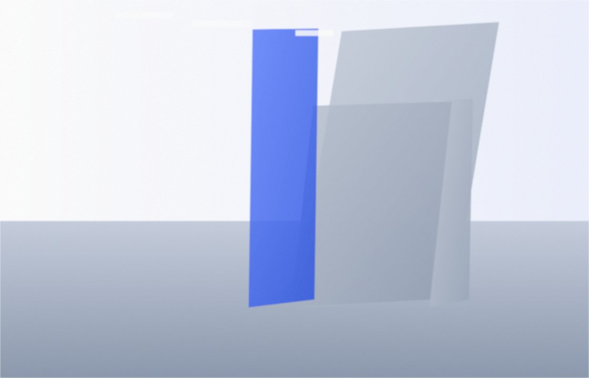

ZIFEIYU PPT SKILL
风格 H
咨询 · 白皮书
浏览器里直接演示，再一键导出可编辑 PPTX、矢量 PDF 与逐页 PNG。
网页 PPT · 可编辑导出
2026 年 10 月
ZIFEIYU PPT SKILL
01
十二种风格，开场先挑一种
第 4 页
02
先量后画，文字始终可编辑
第 7 页
03
十六条规则，错误清零才交付
第 10 页
04
从大纲到成稿的四步
第 13 页
2
设计原则
— SKILL.md · 设计原则
3
第 1 部分
01
01
风格库
02
测量与导出
03
质量门
04
工作流
4
风格库
图表 1 · 十二种风格，分五组
12
分五组：编辑排印、商务理性、舞台冲击、影像叙事、东方人文
A 杂志 · 暖纸
D 报刊 · 版面
B 瑞士 · 网格
F 柔和 · 产品
H 咨询 · 白皮书
L 工程制图
C 发布会 · 暗场
E 大字报 · 粗野
G 摄影集 · 画册
J 拼贴 · 手账
I 日式 · 极简
K 新中式 · 东方
来源：docs/superpowers/specs/2026-10-08-style-library-design.md §2
5
风格库
之前
现在
三套设计系统共用 L01–L24，换一个主题文件整套换色，版面结构始终一样。
24
个版式，三套系统共用
十二种风格各有一套版式，按角色登记；校验与导出只认角色，不认风格。
12
种风格，各有一套版式
来源：references/layouts.md（L01–L24）· 风格库 spec §1、§3.2
6
测量与导出
图表 2 · 示意图

导出器先让浏览器把每一页排好，再逐个量出元素的位置、尺寸、字号与颜色，按同样的坐标写进 PPTX。
圆角、描边、阴影、旋转与竖排换成 PowerPoint 原生形状；画不出的装饰单独截图，文字始终可编辑。
导出原语：圆角矩形 · 直线 · 燕尾 · 旋转 · 阴影 · 竖排
来源：scripts/export-pptx.mjs、scripts/lib/snapshot.mjs
7
风格决定版面，版面决定一页能放多少字。
图表 3 · 示意图
8
质量门
图表 4 · 质量门的三个数字
16
R1–R16，从版式注册一路查到 PPTX 导出一致性
20
其中 12 个是每种风格必须覆盖的核心角色
3
PPTX · PDF · PNG，HTML 是唯一的源
要点
十六条规则，错误清零才交付。
来源：scripts/validate.mjs · scripts/lib/roles.mjs
10
工作流
图表 7 · 从大纲到成稿
01
看风格画廊，按场合挑一种，整份 deck 只用这一种。
02
按内容形状找角色，复制版式骨架，只换文字和图片。
03
查类名、字号、出处与导出一致性，错误必须清零。
04
一键得到可编辑 PPTX、矢量 PDF 与逐页 PNG。
关键
先选风格，再写内容：风格决定版面，版面决定一页能放多少字。
来源：SKILL.md 工作流
13